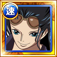
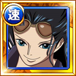

| Nom | Duo féminin de l'équipage de Chapeau de paille Nami et Robin |
| Type | PSY (Nami) / QCK (Nico Robin) |
| Classe 1 |
|
| Classe 2 |
|
| Coût | 55 |
| Combo | 4 |
| Emplacements de pouvoirs | 5 |
| HP |
|
| ATK |
|
| RCV |
|
| Captain Ability |
|
| Special (21→16 puis 14) | Thunderbreed Tempo - Gigantesco Mano : Réduit les dégâts subis de 90% pendant un tour, réduit la durée de "Paralysie" de 3 tours, multiplie les effets des cercles et les effets de type des ATK normales des personnages de type PSY et QCK par 2 pendant un tour et si le capitaine est un personnage de classe Intellectuel, change les cercles de tous les personnages (cercles [BLK] inclus) en cercles [RCV]. |
| Crewmate Ability 1 |
|
| Effets du changement | Libère le personnage de "Lien", de "Paralysie" et de "Désespoir du capitaine" et change son cercle (cercle [BLK] inclus) en cercle [RCV]. |
| Crewmate Ability 2 | Réduit la durée de "Paralysie" de 1 tour. |
| Potential Ability 1 | Réduit les dégâts subis par les ennemis de type INT de 1%. |
| Réduit les dégâts subis par les ennemis de type INT de 2%. | |
| Réduit les dégâts subis par les ennemis de type INT de 3%. | |
| Réduit les dégâts subis par les ennemis de type INT de 5%. | |
| Réduit les dégâts subis par les ennemis de type INT de 7%. | |
| Potential Ability 2 | Réduit les dégâts subis par les ennemis de type STR de 1%. |
| Réduit les dégâts subis par les ennemis de type STR de 2%. | |
| Réduit les dégâts subis par les ennemis de type STR de 3%. | |
| Réduit les dégâts subis par les ennemis de type STR de 5%. | |
| Réduit les dégâts subis par les ennemis de type STR de 7%. | |
| Potential Ability 3 | Réduit la durée de “Lien des cercles” du personnage de 3 tours. |
| Réduit la durée de “Lien des cercles” du personnage de 4 tours. | |
| Réduit la durée de “Lien des cercles” du personnage de 5 tours. | |
| Réduit la durée de “Lien des cercles” du personnage de 7 tours. | |
| Annule le “Lien des cercles” du personnage. | |
     |
|
| Nom | Accompagnatrice du royaume Ryugu Princesse Shirahoshi |
| Type | QCK |
| Classe 1 |  Libre Libre |
| Classe 2 |  Ravageur Ravageur |
| Combo | 4 |
| Emplacements de pouvoirs | 4 puis 5 après le dépassement de limites |
| HP | 2202 puis 2402 après le dépassement de limites |
| ATK | 1186 puis 1336 après le dépassement de limites |
| RCV | 420 puis 450 après le dépassement de limites |
| Special (20→15 puis 14) | Réduit la durée de "Brûlure", de "Lien", de "Lien des coups spéciaux" et des réductions d'ATK de 5 tours, restaure les HP avec 13 fois sa RCV pendant 3 tours et si les HP sont inférieurs à 30%, annule le "Soin impossible" et les "RCV en baisse". |
| Crewmate Ability 1 | Réduit la durée de "Lien des coups spéciaux" du personnage de 3 tours. |
| Crewmate Ability 2 | Ajoute 50 en RCV pour les personnages de type PSY et QCK. |
| Potential Ability 1 | Réduit la durée de "Lien des cercles" de 5 tours. |
| Potential Ability 2 | Restaure les HP à hauteur de 1,5 fois les RCV du personnage si ce dernier réussit un “PARFAIT” lorsque les HP restants sont inférieurs ou égaux à 30%. |
| Nom | Accompagnatrice du royaume d'Alabasta Nefertari Vivi |
| Type | PSY |
| Classe 1 | Libre |
| Classe 2 |  Intellectuel Intellectuel |
| Combo | 4 |
| Emplacements de pouvoirs | 4 puis 5 après le dépassement de limites |
| HP | 2145 puis 2305 après le dépassement de limites |
| ATK | 1304 puis 1404 après le dépassement de limites |
| RCV | 382 puis 452 après le dépassement de limites |
| Special (20→15 puis 14) | Réduit la durée des réductions de dégâts, des réductions de dégâts au-dessus d'un seuil et des augmentations de défense dont bénéficient les ennemis de 5 tours, réduit le temps de chargement des coups spéciaux de tous les personnages d'un tour et ajoute 0,7 au multiplicateur de combos pendant un tour. |
| Crewmate Ability 1 | Réduit complètement l'inversion de son coup spécial. |
| Crewmate Ability 2 | Ajoute 75 en ATK pour les personnages de type PSY et QCK. |
| Potential Ability 1 | Réduit la durée de "Lien des cercles" du personnage de 5 tours. |
| Potential Ability 2 | Réduit le temps de chargement du coup spécial du personnage de 7 tours au début de la quête. |
| Nom | Accompagnatrice du royaume de Dressrosa Rebecca |
| Type | QCK |
| Classe 1 | Libre |
| Classe 2 | Ravageur |
| Combo | 4 |
| Emplacements de pouvoirs | 4 puis 5 après le dépassement de limites |
| HP | 2075 puis 2245 après le dépassement de limites |
| ATK | 1214 puis 1334 après le dépassement de limites |
| RCV | 412 puis 472 après le dépassement de limites |
| Special (20→15 puis 14) | Retarde toutes les attaques ennemies d'un tour, réduit la durée des blocages et des diminutions de hausse du multiplicateur de combos de 5 tours et si le capitaine est un personnage de type PSY ou QCK, multiplie l'ATK des personnages de type PSY et QCK par 2 pendant un tour. |
| Crewmate Ability 1 | Ajoute 150 en HP pour les personnages de type PSY et QCK. |
| Crewmate Ability 2 | Ajoute 2 fois son ATK en dégâts additionnels. |
| Potential Ability 1 | Réduit la durée de “Lien des cercles” du personnage de 5 tours. |
| Potential Ability 2 | Réduit les dégâts subis par les ennemis de type STR de 5%. |
| Nom | Infiltrée à Marie Joie Jewelry Bonney |
| Type | PSY |
| Classe 1 |  Cogneur Cogneur |
| Classe 2 | Libre |
| Combo | 4 |
| Emplacements de pouvoirs | 4 puis 5 après le dépassement de limites |
| HP | 2435 puis 2655 après le dépassement de limites |
| ATK | 1345 puis 1425 après le dépassement de limites |
| RCV | 374 puis 454 après le dépassement de limites |
| Special (20→15 puis 14) | Multiplie l'ATK contre les ennemis avec leurs attaques retardées par 2 pendant un tour, réduit la durée de "Résistance avec 1 HP" dont bénéficient les ennemis de 3 tours, réduit les HP de l'équipe de 80% et inflige 60 fois les HP perdus en dégâts non élémentaires sur tous les ennemis en ignorant les effets défensifs. |
| Crewmate Ability 1 | Multiplie l'ATK du personnages contre les ennemis de type INT par 1,2. |
| Crewmate Ability 2 | Annule les "Onomatopées dissimulées". |
| Potential Ability 1 | Si un coup "PARFAIT" est effectué avec ce personnage, 70% de chances de faire 7% l'ATK du personnage en dégâts additionnels. |
| Potential Ability 2 | Permet aux attaques normales du personnage d'ignorer les barrières si les HP sont supérieurs ou égaux à 50%. |


 
